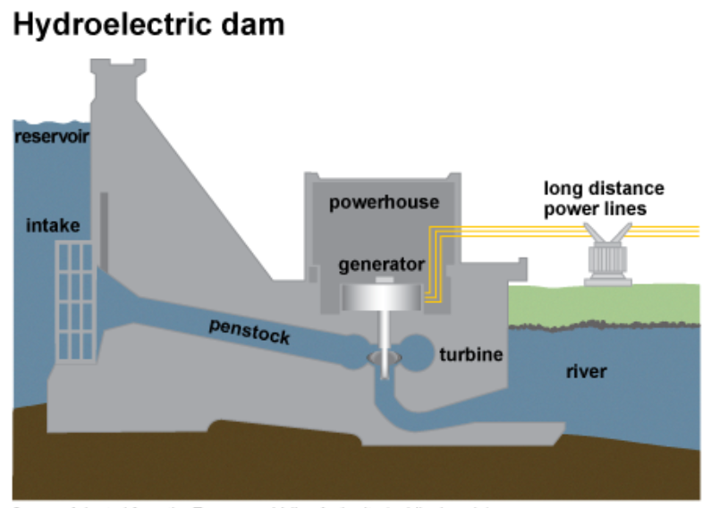
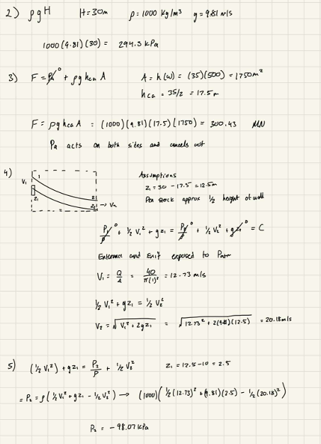
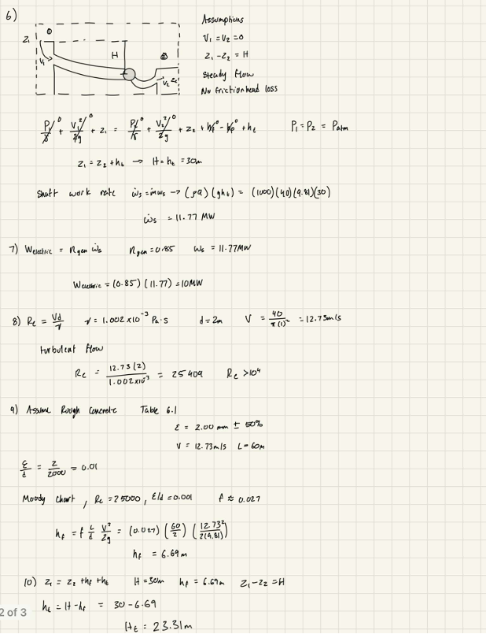

Fluid Mechanics · Jan — Apr 2025
Hydroelectric Dam Design & Analysis
A solo MSE 223 final project applying fluid mechanics to a proposed small-scale hydroelectric dam — hydrostatic force, flow through the penstock, and how much power actually reaches the grid after accounting for real-world losses.

Overview
The brief put me in the role of an engineer-in-training for BC Hydro, evaluating whether a proposed dam on the Peace River, BC could feasibly replace diesel generation for a remote community. The system was a reservoir feeding a penstock into a turbine, and my job was to work through it with actual fluid mechanics — hydrostatic pressure and force on the dam wall, flow velocity and pressure through the penstock via Bernoulli's equation, and the real losses that separate a system's theoretical output from what it can actually deliver.
At a 30 m head, the dam wall sees roughly 300 MN of hydrostatic force, and the energy balance across the whole system puts theoretical shaft power at 11.77 MW — which comes down to about 10 MW of actual electrical output once a realistic 85% generator efficiency is applied. The penstock flow itself is turbulent (Reynolds number around 25,400), which isn't a flaw so much as the reality of large-scale hydro systems, but it does cost real head: friction losses through the 60 m concrete penstock work out to 6.69 m, cutting the usable head from 30 m down to about 23.3 m — roughly a 22% loss before the water even reaches the turbine. The report closes with three recommendations: reduce that friction loss with smoother penstock materials, a larger diameter, and gentler bends; plan around the ecological impact (fish passage, sediment management, periodic assessments); and keep the turbine and penstock on a regular maintenance schedule to protect efficiency over the system's life.
Analysis
From Hydrostatics to Power Output
A smaller, calculation-driven project — two sets of hand calculations covering the dam's structural loading and its actual power delivery.

Hydrostatic Force & Penstock Flow
The dam wall's hydrostatic force works out to about 300.43 MN, using the pressure at the wall's centroid over its submerged area — atmospheric pressure acts on both sides and cancels out, so it's the water alone doing the loading. From there, applying Bernoulli's equation along the penstock (assuming the entrance and exit are both exposed to atmospheric pressure) gives a flow velocity of roughly 12.73 m/s at the inlet, rising to about 20.18 m/s further down the drop. One result worth flagging: at one point in the system the calculated gauge pressure comes out negative, around -98 kPa — a low-pressure zone that would be worth a closer look for cavitation risk in a real design, not just a number to report.

Power Output & Head Losses
An energy balance from reservoir to turbine gives a theoretical shaft power of 11.77 MW at the assumed 30 m head; applying an 85% generator efficiency brings that down to roughly 10 MW of actual electrical output. Checking the penstock flow's Reynolds number (about 25,409) confirms it's turbulent, so I pulled a friction factor off the Moody chart for rough concrete (≈0.027) and used it to calculate a real friction head loss of 6.69 m over the 60 m penstock — leaving an effective head of about 23.31 m instead of the full 30 m. It's the gap between the two that makes the case for the report's top recommendation: reducing friction loss is the single biggest lever on this system's actual efficiency.
Full Write-Up
Final Report
The full MSE 223 report — design analysis, hand calculations, conclusions, and recommendations — submitted for the course.